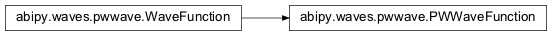
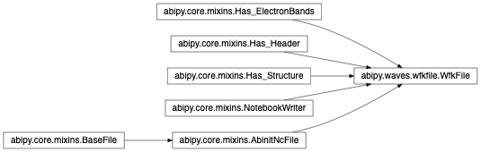

waves Package¶
pwwave Module¶
This module contains the class describing a planewave wavefunction.
-
class
abipy.waves.pwwave.PWWaveFunction(structure, nspinor, spin, band, gsphere, ug)[source]¶ Bases:
abipy.waves.pwwave.WaveFunctionThis object describes a wavefunction expressed in a plane-wave basis set.
Inheritance Diagram
-
norm2(space='g')[source]¶ Return \(||\psi||^2\) computed in G- or r-space.
- space: Integration space. Possible values [“g”, “gsphere”, “r”]
if “g” or “r” the scalar product is computed in G- or R-space on the FFT box. if “gsphere” the integration is done on the G-sphere.
-
braket(other, space='g')[source]¶ Returns the scalar product <u1|u2> of the periodic part of two wavefunctions computed in G-space or r-space, depending on the value of space. Note that selection rules introduced by k-points is not taken into accout.
- Parameters
other – Other wave (right-hand side)
space – Integration space. Possible values [“g”, “gsphere”, “r”] if “g” or “r” the scalar product is computed in G- or R-space on the FFT box. if “gsphere” the integration is done on the G-sphere. Note that this option assumes that self and other have the same list of G-vectors.
-
get_interpolator()[source]¶ Return an interpolator object that interpolates periodic functions in real space.
-
plot_line(point1, point2, num=200, with_krphase=False, cartesian=False, ax=None, fontsize=12, **kwargs)[source]¶ Plot (interpolated) wavefunction in real space along a line defined by
point1andpoint2.- Parameters
point1 – First point of the line. Accepts 3d vector or integer. The vector is in reduced coordinates unless
cartesianis True. If integer, the first point of the line is given by the i-th site of the structure e.g.point1=0, point2=1gives the line passing through the first two atoms.point2 – Second point of the line. Same API as
point1.num – Number of points sampled along the line.
with_krphase – True to include the \(e^{ikr}\) phase-factor.
cartesian – By default,
point1andpoint1are interpreted as points in fractional coordinates (if not integers). Use True to pass points in cartesian coordinates.ax –
matplotlib.axes.Axesor None if a new figure should be created.fontsize – legend and title fontsize.
Return:
matplotlib.figure.FigureKeyword arguments controlling the display of the figure:
kwargs
Meaning
title
Title of the plot (Default: None).
show
True to show the figure (default: True).
savefig
“abc.png” or “abc.eps” to save the figure to a file.
size_kwargs
Dictionary with options passed to fig.set_size_inches e.g. size_kwargs=dict(w=3, h=4)
tight_layout
True to call fig.tight_layout (default: False)
ax_grid
True (False) to add (remove) grid from all axes in fig. Default: None i.e. fig is left unchanged.
ax_annotate
Add labels to subplots e.g. (a), (b). Default: False
fig_close
Close figure. Default: False.
-
plot_line_neighbors(site_index, radius, num=200, with_krphase=False, max_nn=10, fontsize=12, **kwargs)[source]¶ Plot (interpolated) density/potential in real space along the lines connecting an atom specified by
site_indexand all neighbors within a sphere of givenradius.- Parameters
site_index – Index of the atom in the structure.
radius – Radius of the sphere in Angstrom.
num – Number of points sampled along the line.
with_krphase – True to include the \(e^{ikr}\) phase-factor.
max_nn – By default, only the first
max_nnneighbors are showed.fontsize – legend and label fontsize.
Return:
matplotlib.figure.FigureKeyword arguments controlling the display of the figure:
kwargs
Meaning
title
Title of the plot (Default: None).
show
True to show the figure (default: True).
savefig
“abc.png” or “abc.eps” to save the figure to a file.
size_kwargs
Dictionary with options passed to fig.set_size_inches e.g. size_kwargs=dict(w=3, h=4)
tight_layout
True to call fig.tight_layout (default: False)
ax_grid
True (False) to add (remove) grid from all axes in fig. Default: None i.e. fig is left unchanged.
ax_annotate
Add labels to subplots e.g. (a), (b). Default: False
fig_close
Close figure. Default: False.
-
export_ur2(filename, visu=None)[source]¶ Export \(|u(r)|^2\) to file
filename.- Parameters
filename – String specifying the file path and the file format. The format is defined by the file extension. filename=”prefix.xsf”, for example, will produce a file in XSF format. An empty prefix, e.g. “.xsf” makes the code use a temporary file.
visu –
Visualizersubclass. By default, this method returns the first available visualizer that supports the given file format. If visu is not None, an instance of visu is returned. SeeVisualizerfor the list of applications and formats supported.
- Returns
Instance of
Visualizer
-
wfkfile Module¶
Wavefunction file.
-
class
abipy.waves.wfkfile.WfkFile(filepath)[source]¶ Bases:
abipy.core.mixins.AbinitNcFile,abipy.core.mixins.Has_Header,abipy.core.mixins.Has_Structure,abipy.core.mixins.Has_ElectronBands,abipy.core.mixins.NotebookWriterThis object provides a simplified interface to access and analyze the data stored in the WFK.nc file produced by ABINIT.
Usage example:
wfk = WfkFile("foo_WFK.nc") # Plot band energies. wfk.ebands.plot_ebands() # Visualize crystalline structure with vesta. wfk.visualize_structure_with("vesta") # Visualize u(r)**2 with vesta. wfk.visualize_ur2(spin=0, kpoint=0, band=0, appname="vesta") # Get a wavefunction. wave = wfk.get_wave(spin=0, kpoint=[0, 0, 0], band=0)
Inheritance Diagram
-
property
structure¶ abipy.core.structure.Structureobject.
-
property
ebands¶
-
property
nkpt¶ Number of k-points.
-
property
gspheres¶ List of
GSphereobjects ordered by k-points.
-
get_wave(spin, kpoint, band)[source]¶ Read and return the wavefunction with the given spin, band and kpoint.
- Parameters
spin – spin index. Must be in (0, 1)
kpoint – Either
Kpointinstance or integer giving the sequential index in the IBZ (C-convention).band – band index.
returns –
WaveFunctioninstance.
-
export_ur2(filepath, spin, kpoint, band, visu=None)[source]¶ Export \(|u(r)|^2\) on file filename.
- Returns
Instance of
Visualizer
-
visualize_ur2(spin, kpoint, band, appname='vesta')[source]¶ Visualize \(|u(r)|^2\) with visualizer. See
Visualizerfor the list of applications and formats supported.
-
ipw_visualize_widget()[source]¶ Return an ipython widget with controllers to visualize the wavefunctions.
Warning
It seems there’s a bug with Vesta on MacOs if the user tries to open multiple wavefunctions as the tab in vesta is not updated!
-
property